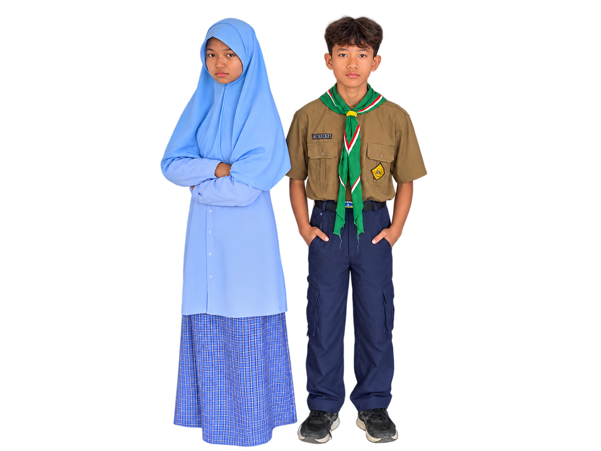

12 Maret 2026 • Prestasi
Juara 1 Lomba Robotik Tingkat Nasional 2026
Tim Robotik SMPM 6 Krian meraih penghargaan tertinggi dalam kompetisi inovasi teknologi siswa sekolah menengah.
SMP Muhammadiyah 6 Krian menyelenggarakan pendidikan unggul berbasis Al-Islam dan Kemuhammadiyahan yang terintegrasi dengan penguasaan sains, teknologi, serta kepemimpinan masa depan.

Akreditasi A+
Unggul & Terpercaya
Program Tahfidz
Bimbingan 3 Juz
0
Siswa Aktif
0
Guru & Pendidik
0
Penghargaan Juara
0
Ekstrakurikuler

Pendidikan Berkarakter
SMPM 6 Krian
Assalamu’alaikum Warahmatullahi Wabarakatuh.
Kepercayaan para bapak, ibu, dan wali murid adalah amanah utama bagi seluruh civitas akademika SMP Muhammadiyah 6 Krian. Di lembaga ini, kami mengintegrasikan pembiasaan ibadah harian, penguatan akidah, serta bimbingan akademik terstruktur.
Kami membekali para siswa tidak hanya dengan kecerdasan intelektual (Iptek), tetapi juga benteng imtaq yang kokoh agar siap menghadapi dinamika zaman tanpa kehilangan jati diri keislaman.
Drs. H. Ahmad Muhajir, M.Pd
Kepala Sekolah SMPM 6 Krian
Pengembangan siswa yang dirancang untuk membentuk pribadi unggul, berkarakter, dan siap menghadapi tantangan global.
Bimbingan hafalan terstruktur dengan target capaian minimal 3 Juz selama 3 tahun masa studi.
Pengenalan logika komputasi, dasar pemrograman, dan perakitan alat otomatisasi.
Seni bela diri pencak silat untuk melatih ketahanan fisik, mental, dan kedisiplinan diri.
Gerakan kepanduan untuk mengasah karakter kepemimpinan dan rasa kepedulian sosial.
12 Maret 2026 • Prestasi
Tim Robotik SMPM 6 Krian meraih penghargaan tertinggi dalam kompetisi inovasi teknologi siswa sekolah menengah.

8 Maret 2026 • Kegiatan
Rangkaian kegiatan bakti sosial dan penyaluran bantuan paket sembako kepada masyarakat sekitar lingkungan sekolah.

5 Maret 2026 • Akademik
Pelatihan etika penggunaan media sosial dan pemahaman dasar keamanan informasi digital bagi siswa kelas VII dan VIII.
"Pondasi agama dan logika pemrograman yang saya dapatkan di SMPM 6 Krian sangat membantu perjalanan studi saya hingga bekerja di industri teknologi saat ini."
Software Engineer • Alumni 2018
"Kedisiplinan di Hizbul Wathan dan bimbingan Tahfidz membentuk mental kepemimpinan saya hingga dipercaya memimpin organisasi kemahasiswaan di kampus."
Mahasiswi Kedokteran • Alumni 2020
"Pembiasaan ibadah harian di sekolah membuat saya memiliki benteng moral yang kuat di tengah persaingan perbankan internasional."
Financial Analyst • Alumni 2017
"Ekstrakurikuler robotik membuka jalan bagi saya untuk memenangkan berbagai kompetisi nasional dan mendalami dunia IoT."
IoT Specialist • Alumni 2019
Jawaban atas pertanyaan yang paling sering ditanyakan seputar pendaftaran peserta didik baru.